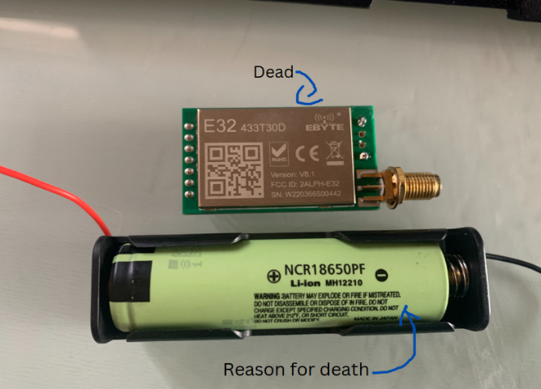
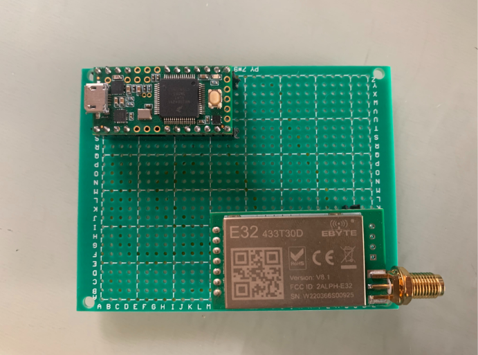
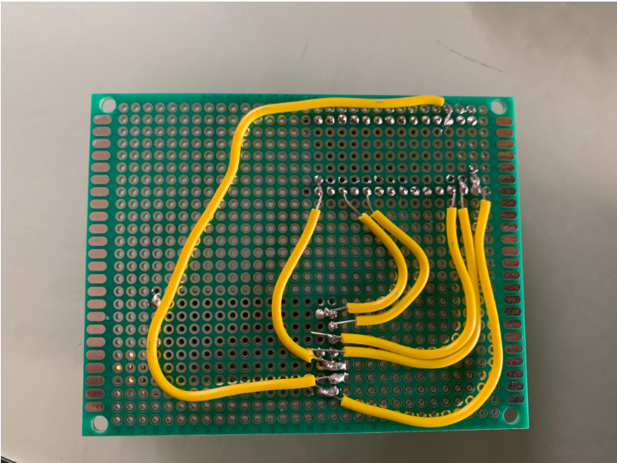
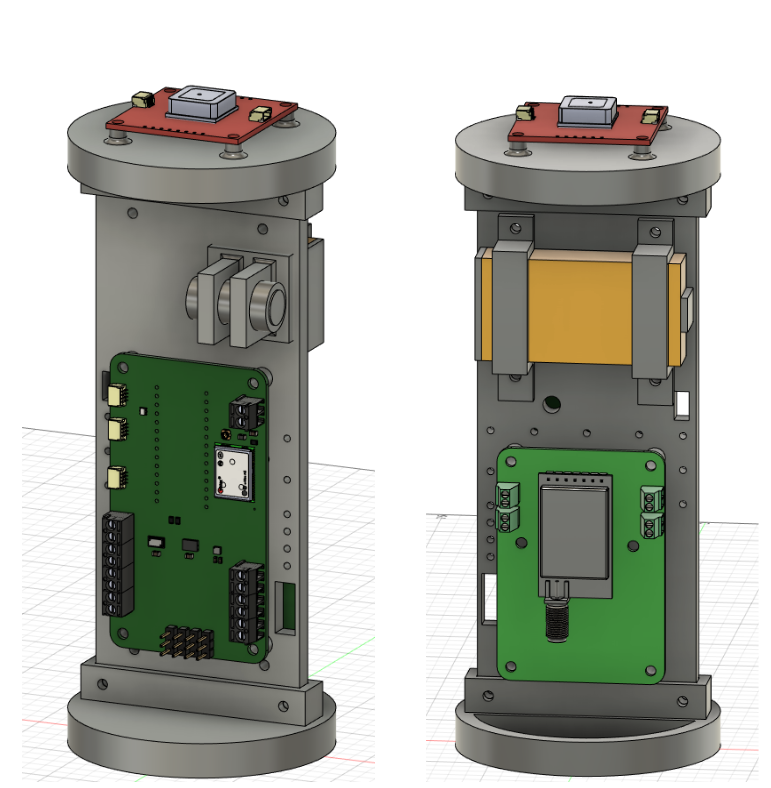
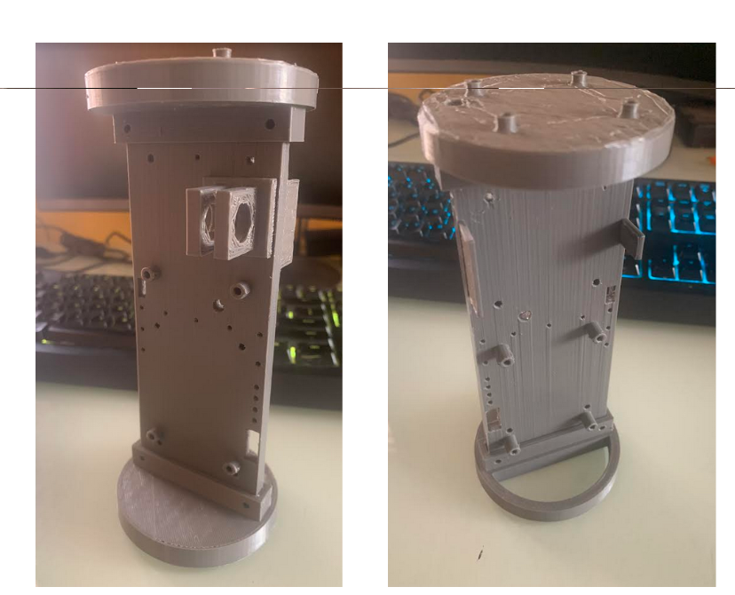

October 2022
Dev Log 11
Accomplishments in October 2022
In October my main goal was to get the Ground Control UI up and running, so that’s what I did! I started out small by only updating the graph and value for one variable, and then moved on to updating all the data. This was all done with data directly printed to the Serial Port from TFAC, not the data transmitted via the LoRa’s.
I’m working on the software for transmitting the telemetry data, the LoRa drivers I was using have a couple of “delay()” functions in them, so when a packet is transmitted (done every 60ms) the entire software freezes for a couple of seconds. As you can tell this is really not ideal for a real-time system. Next month I intend on fixing this by implementing the RadioHead Packet Radio Library in my code, it’s a more general-purpose library and works with multiple different kinds of radios (works with embedded too!).
In terms of Telemetry hardware, I started off by accidentally frying one of the E32 LoRa modules (fig 1) by powering it with a 9A battery. I also worked on the Ground-Station hardware by switching from a solderless breadboard to a more efficient protoboard for the Teensy and receiver LoRa (figs 2 and 3).
Finally, I worked on designing a new Avionics stack. The main difference between this new stack and the previous one is that this stack is a single sled with all the components on that single sled (instead of the mess of multiple bulkheads and sleds). Additionally, this avionics stack is made for a wider diameter (74mm instead of 66mm, I decided to change up Air MK1’s design. OpenRocket simulation should be done next month) so it gives me a little more room to fit everything. Unfortunately after printing the stack out, I realized that instead of making the structural integrity and cable management better, I actually made it worse (figs 4, 5, 6, and 7)! Next month I plan on redesigning the Avionics stack from the ground up.




